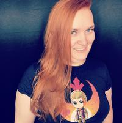

About Me
I grew up in California, and moved to Austin after finding it in both comfortable culture and climate. I've got an incredibly supportive family who has allowed me to follow to my passion of coding, which I found a bit later in life than I would have prefered.
I've been lucky enough to do a large amount of traveling, including large amounts of the United States, Mexico, Canada, the Carribean Islands, most of Europe, and Australia. I have more pets than I really like to mention. I'm a typical cartoon loving nerd, ranging from traditional Disney, to anime, to more modern Steven Universe and My Little Pony. Best pony is CadanceConnect with Me